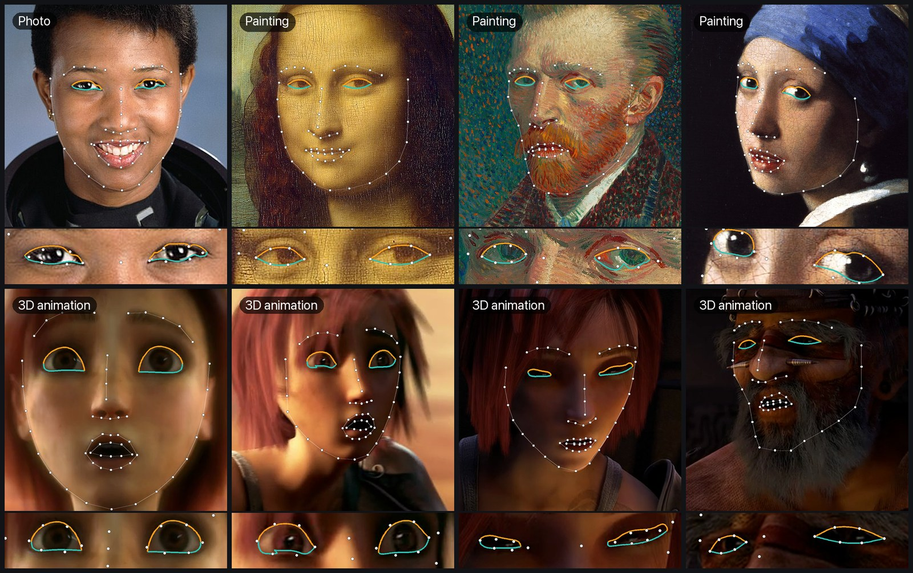

Towards Multi-Domain Face Landmark Detection with Synthetic Data from Diffusion Model
MDFLD · ICASSP 2024
Korea University

mdfld image with default settings. None of these images was used for training.One landmark detector for photos, paintings, caricatures and cartoons, trained with synthetic faces from a diffusion model.
Overview
Facial landmark detection is crucial for applications such as 3D facial reconstruction, face recognition and augmented reality. Current methods work well on real-world images, but detecting landmarks in other domains, such as cartoons or caricatures, remains hard because annotated training data is scarce.
We propose a two-stage approach that uses synthetic data from a pre-trained diffusion model. A landmark-conditioned face generator is trained on a large set of real faces, then fine-tuned on a small set of image–landmark pairs with text prompts for each style. It generates paired images and landmarks in 25 styles, which are used to fine-tune an existing landmark detector for multi-domain face landmark detection.
What is in the repository
25 styles × 400 images at 256 × 256 with 68 landmarks: caricatures, Pixar-style characters, hand-drawn illustrations, artistic portraits and more.
Fine-tuned with self-training on cartoon and caricature faces. More accurate than the paper model on the CariFace caricature test set.
Smooth upper and lower eyelid curves without the lash band, from v2 landmarks and SAM 3.1 text prompts.
An mdfld command and Python API for images and videos, with automatic face finding and temporal smoothing.
Quick start
pip install "mdfld[sam] @ git+https://github.com/zenonLEE/MDFLD"
mdfld image face.png --out face.json --vis face_mdfld.png
mdfld video clip.mp4 --out clip.json --vis clip_mdfld.mp4Python 3.10–3.12 with a CUDA GPU; install PyTorch 2.4 or newer first. SAM 3.1 weights need access on Hugging Face. Details in the README.
Cartoon model v2 on caricatures
CariFace test set, 1,560 caricatures. NME in % of the outer eye-corner distance; lower is better.
| Model | All 68 | Eyes | Mouth | Nose | Eyebrows | Jaw |
|---|---|---|---|---|---|---|
| v1 (paper) | 6.70 | 3.49 | 6.29 | 4.81 | 6.77 | 10.42 |
| v2 | 5.03 | 2.78 | 4.62 | 3.80 | 5.01 | 7.75 |
Both models with the crops of the mdfld package. On 313 held-out real-face video frames (automatic labels), v2 reaches 1.74% (v1: 3.03%). See the README for other crops, the protocol and the limitations.
BibTeX
@inproceedings{li2024towards,
title={Towards Multi-Domain Face Landmark Detection with Synthetic Data from Diffusion Model},
author={Li, Yuanming and Kim, Gwantae and Kwak, Jeong-gi and Ku, Bon-hwa and Ko, Hanseok},
booktitle={ICASSP 2024-2024 IEEE International Conference on Acoustics, Speech and Signal Processing (ICASSP)},
pages={6730--6734},
year={2024},
organization={IEEE}
}